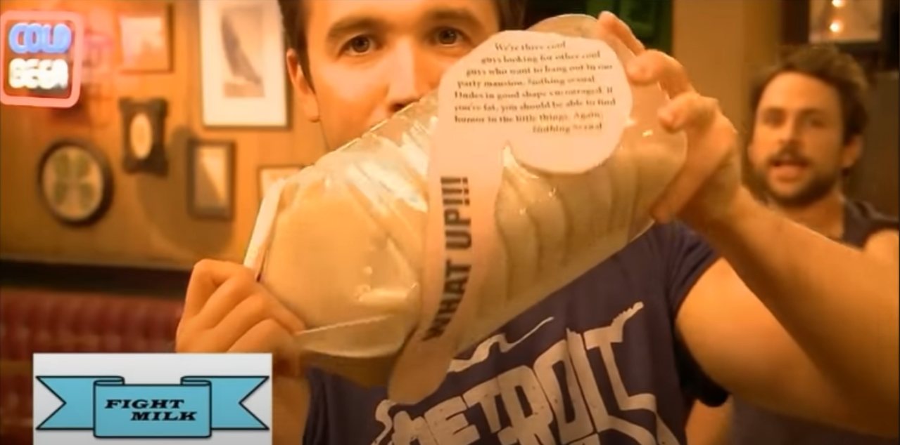

Fight Milk

The first alcoholic, dairy based, protein drink!
It contains essential vitamins and nutrients like crowtein to give YOU the strength to DOMINATE others.
Ingredients
- 5 Crow Eggs (don't use chicken eggs, you'll need the crowtein from the crow eggs
- 2 Cups of Milk
- 1 Cup of Vodka
Steps
- Crack the crow eggs into a pot.
- Whisk the eggs throughly.
- Add milk while whisking.
- Pour Vodka into the mixture and mix for 2 minutes.
- Bring pot to a simmer to activate the crowtein.
- Pour into container and refrigerate for and hour.
- Serve chilled before your fight.
Made by bodygaurds for bodygaurds!